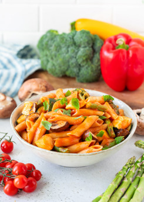

Massa com Pimento Vermelho Assado e Legumes

Informação
- Categoria: Pratos Principais
- Cozinha: Mediterrânica
- Dificuldade: Fácil
Ingredientes
Para o Molho
- 2 chávenas de tomates cherry
- 2 pimentos vermelhos médios, sem sementes e cortados grosseiramente
- 1 cebola média, cortada grosseiramente
- 4 dentes de alho inteiros
- ½ colher de chá de orégãos secos
- ½ colher de chá de manjericão seco
- ½ a 1 colher de chá de sal marinho (opcional)
- 1 a 2 colheres de sopa de sumo de limão fresco
- 2 a 3 colheres de sopa de água (opcional)
Legumes
- 1 chávena de curgete picada
- 1 chávena de abóbora amarela picada
- 1 chávena de floretes de brócolos
- 1 chávena de espargos cortados em pedaços
- 1 chávena de cogumelos picados
- 1 colher de chá de alho em pó
Massa
- 340 g de massa penne sem glúten e sem milho
Para Servir
- 2 a 4 folhas de manjericão fresco picadas (opcional)
Preparação
Assar os Legumes
- Pré-aqueça o forno a 200°C.
- Forre dois tabuleiros com papel vegetal.
Tabuleiro 1
Distribua: - os tomates cherry; - os pimentos vermelhos; - a cebola; - os dentes de alho inteiros.
Polvilhe com: - os orégãos; - o manjericão seco; - uma pitada de sal (opcional).
Tabuleiro 2
Distribua: - a curgete; - a abóbora amarela; - os brócolos; - os espargos; - os cogumelos.
Polvilhe com: - o alho em pó; - uma pitada de sal (opcional).
- Leve ambos os tabuleiros ao forno.
- Coloque um na grelha superior e outro na grelha central.
- Asse durante 25 a 35 minutos.
- Troque os tabuleiros de posição a meio do tempo.
- Os legumes devem ficar macios e ligeiramente caramelizados.
Preparar o Molho
- Retire o alho assado do tabuleiro.
- Remova a pele dos dentes de alho.
- Coloque no liquidificador:
- os tomates assados;
- os pimentos assados;
- a cebola assada;
-
o alho assado.
-
Adicione o sumo de limão.
- Junte um pouco de água caso pretenda um molho mais líquido.
- Triture até obter um molho cremoso e homogéneo.
- Ajuste o sal ou o limão a gosto.
Cozer a Massa
- Ferva uma panela grande com água.
- Coza a massa conforme as instruções da embalagem.
- Cozinhe apenas até ficar al dente.
- Escorra e reserve.
Montagem
- Numa taça grande ou panela, coloque:
- a massa cozida;
- a curgete assada;
- a abóbora assada;
- os brócolos assados;
- os espargos assados;
-
os cogumelos assados.
-
Adicione o molho de tomate e pimento vermelho.
- Misture delicadamente até todos os ingredientes ficarem bem envolvidos.
Servir
- Sirva quente.
- Decore com manjericão fresco picado, se desejar.
- Pode acrescentar algumas gotas adicionais de sumo de limão antes de servir.
Fonte
https://www.medicalmedium.com/blog/roasted-red-pepper-and-vegetable-pasta